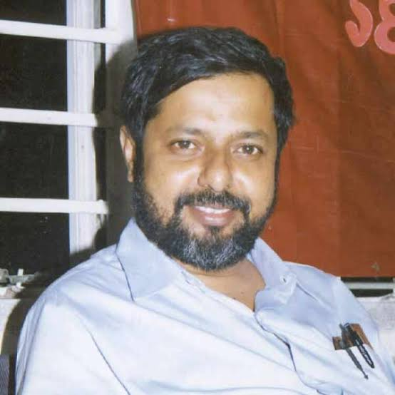

This website, Nishaan, is dedicated to Comrade Manab Mukherjee — an unforgettable name in the history of the student movement of the University of Calcutta.
A student of Business Management at the University of Calcutta, he served as the former Secretary of the SFI Calcutta University Local Committee, former General Secretary of the Calcutta University Students’ Union, and former President of SFI Kolkata. He later went on to serve as a Minister in the Left Front Government of West Bengal.
Comrade Manab Mukherjee was a pathfinder in transforming the student union into a space that shaped responsible and socially conscious human beings. Through his writings, speeches, and organizational leadership, he nurtured generations of principled and idealistic individuals committed to democratic values.
It was under his leadership that classrooms became centres of revolutionary political consciousness, and the struggle for university autonomy gained decisive strength. From the university campus, he offered direction to the broader Left-democratic movement across Bengal and India.
Not a political figure to be blindly imitated — but an aspiration to become a better human being by embracing the finest qualities within ourselves. Manab-da was candid, graceful, and effortlessly articulate.
Nishaan seeks to preserve and disseminate his political legacy, ideological contributions, and lifelong commitment to building a just and egalitarian society rooted in progressive and Leftist principles.

Comrade Manab Mukherjee
(1955-2022)